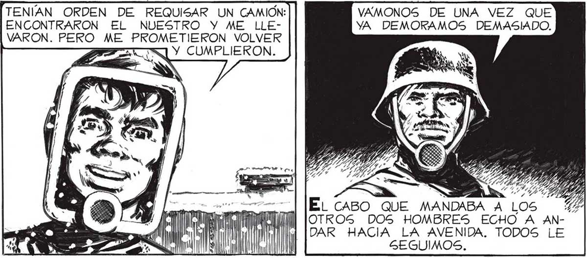
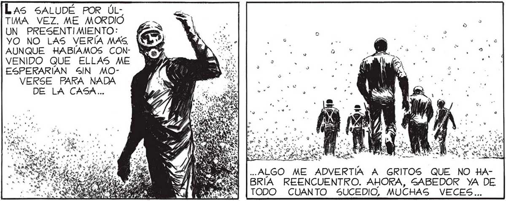
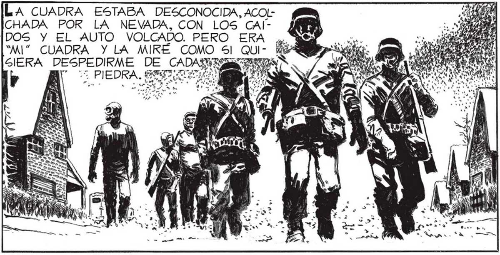

¿TODAVIA TIENE DUDAS DE 65U5 INTENCIONES, ELENA 2 ¿NO LE DICE NADA LA "NEVADA"?2 ¿TODA LA MUERTE QUE NOS RODEA? NO CREÍAMOS VERTE NUNCA MAS, PABLO... YTRA VEZ ESTUVIMOS AFUERA, BAJO AQUELLA "NEVADA QUE SEGUIA y 7 y SUN li ÉLENA QUEDO SIN PALABRAS, SOLO CON LA” GRIMAS. ABREVIÉ EN LO QUE PUDE LA DESPEDIDA. DESGARRADO POR DENTRO CON LA CER TEZA DE QUE Dr Y FICILMENTE VOL VERÍA A TENERLAS CONTRA MI PECHO, ME APARTÉ POR FIN DE ELENA Y MARTITA. VAMONOS DE UNA VEZ QUE YA DEMORAMOS DEMASIADO. TENÍAN ORDEN DE REQUISAR UN CAMIÓN: ENCONTRARON EL NUESTRO Y ME LLEVARON. PERO ME PROMETIERON VOLVER E SÍ CUMPLIERON. A CUADRA ESTABA DESCONOCIDA, ACOLCHADA POR LA NEVADA, CON LOS CAlJDOS Y EL AUTO VOLCADO. PERO ERA “MI” CUADRA Y LA MIRÉ COMO Sl QUI- Hi SIERA DESPEDIRME DE CADA IST 4 Y DAR HACIA LA AVENIDA. TODOS LE SEGUIMOS. LAs SALUDÉ POR ÚLTIMA VEZ. ME MORDIÓ UN PRESENTIMIENTO: YO NO LAS VERÍA MAS, AUNQUE HABÍAMOS CONVENIDO QUE ELLAS ME ESPERARÍAN SIN MOVERSE PARA NADA DE LA CASA... FEA | R PU 4 “ <.: ho ÁLLÍ EN LA VENTANA, VI ' A ELENA Y A MARTITA; SOLO VEÍA 5US SlLUETAS, PERO YO SABÍA QUE LLORABAN. BRÍA REENCUENTRO. AHORA, SABEDOR YA DE TODO GCUANTO SUCEDIO, MUCHAS VECES... LOS QUE ME LLEVARON le ERAN SOLDADOS, SEÑOR pil ... PIENSO £l NO HUBIERA SIDO MEJOR QUE MI PRESENTIMIENTO RESULTARA CIERTO, QUE NO LAS VIERA NUNCA MAS. PORQUE LAS CIRCUNSTANCIAS EN QUE VOLVI A ENCONTRARLAS NO PUDIERON SER MAS ATROCES,


